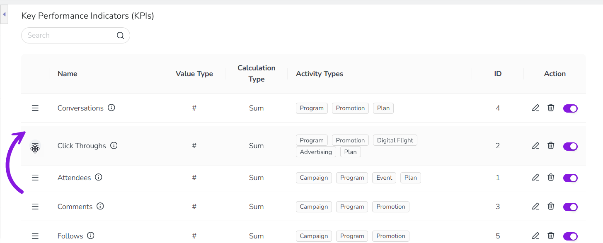
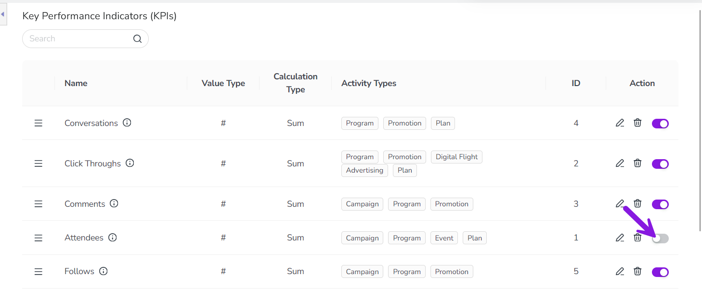

In Uptempo Campaign Management, you can create custom Key Performance Indicators (KPIs) to define how success is measured for the activities in your marketing plan. Use KPIs to plan and track operational metrics like engagement and conversion, which provides visibility into execution quality and progress toward planned outcomes.
How KPIs work
For each metric you want to measure, you can create a custom KPI to define the metric and how you want to measure it. KPIs can have any of the following value types:
Number
Percentage
Currency
For each KPI, you can also define:
Whether you want aggregated values for a KPI to be calculated as a sum, or as an average
The precision (number of decimal places) you want to use to display values for the KPI
Whether an increase or decrease in the KPI value represents a positive change (for indicating trends)
You can also manage your existing KPIs to change their display order, or to retire KPIs that are no longer needed.
Create and assign KPIs
You can create new KPIs at any time, and assign them to activity types to allow users to track the KPI on activities of that type.
Create a KPI and assign it to activity types
To create KPIs and assign them to activity types:
In the Uptempo navigation menu, click Activities.
In the Activities section, click Settings. The Activity Configuration page opens.
On the Activity Configuration page, click Measures > KPIs. The table of KPIs is displayed.
Click Add KPI. The Add KPI dialog opens.
In the Add KPI dialog, use the configuration fields to set up the KPI:
Name
Enter a name for the KPI. This is displayed as the title text for the KPI in the details panel of activities where this KPI is used.
Description (optional)
Enter a brief description of the KPI. If specified, this is displayed as a tooltip beside the KPI's title text in an activity's details panel.
Value Type
Set the type of value to use to measure and display this KPI's results. Choose between:
Number: Use for results that are measured with a count, such as Visitors, Leads, Impressions.
Currency: Use for results measured with a money value, such as Average Deal Size,CAC, LTV.
Percentage: Use for results that are measured as a rate, such as Conversion Rate, Bounce Rate.
Calculation Type
Set how result values are aggregated. Choose between:
Sum: Values are aggregated by adding all values together and displaying a total. Use when the total value is meaningful, such as Total Leads, Total Revenue.
Average: Values are aggregated by finding and displaying the average. Use when the per-instance result is meaningful, such as Avg. Email Open Rate, Avg. Cost Per Lead..
Decimal Places
Set how many decimal places are used for recording and displaying result values (for example, set 2 to display values as 1.23).
Imported result values that have more decimal places than specified here are saved with up to 5 decimal places, but are rounded for display according to this setting.
Improvement Direction
Set whether an increase or a decrease in the result value over time is displayed and color-coded as an improvement. Choose between:
Higher is better: Increases in the result value are displayed in green with an up arrow, decreases are displayed in red with a down arrow.
Lower is better: Decreases in the result value are displayed in green with a down arrow, decreases are displayed in red with an up arrow.
Link to Activity Type (optional)
Select the activity types that this KPI applies to. The KPI will be displayed under Details > KPIs for all activities of the types specified here.
Click OK to finish creating the KPI. The Add KPI dialog closes, and the new KPI appears in the table of KPIs under Activity Configuration > Measures > KPIs.
You have created a KPI. If you linked the KPI to any activity types, the new KPI will immediately be displayed on the details panel of activities of those types.
Change the display order of KPIs
You can manage your existing KPIs to change the order in which they are displayed on activities, and to deactivate KPIs that you no longer want to track.
Change the order in which KPIs are displayed
You can manually modify the order in which KPIs are displayed on the KPIs section of an activity's details panel, for example to highlight the most important KPIs.
In the Uptempo navigation menu, click Activities.
In the Activities section, click Settings. The Activity Configuration page opens.
In the Activity Configuration menu, click Measures > KPIs. The Key Performance Indicators (KPIs) settings page is shown.
In the list of KPIs, find the KPI whose position in the order you want to change.
To quickly find a KPI by name, enter a keyword into the Search box to display only KPIs that contain that keyword in their name.
Use the KPI's Display Order handle to drag the KPI to the position in the list where you want it to appear: 
The change is saved automatically, and takes effect immediately.
You have changed the display order of KPIs. KPIs that are linked to an activity type are now displayed on activities of that type in the new order.
Deactivate KPIs
If you no longer want to track a KPI on your activities, you can deactivate that KPI to retire it. You can deactivate any existing KPI at any time. When you deactivate a KPI:
The deactivated KPI will no longer be tracked on any newly created activity.
If the KPI was previously used on any activities, it will still remain visible on those activities (and its values can still be edited on those activities).
If you change your mind later and decide to start tracking a KPI again, you can also reactivate any deactivated KPI.
Deactivate a KPI
In the Uptempo navigation menu, click Activities.
In the Activities section, click Settings. The Activity Configuration page opens.
In the Activity Configuration menu, click Measures > KPIs. The Key Performance Indicators (KPIs) settings page is shown.
In the list of KPIs, find the KPI you want to deactivate.
To quickly find a KPI by name, enter a keyword into the Search box to display only KPIs that contain that keyword in their name.
To deactivate the KPI, click its Activate/Deactivate KPI toggle (in the Action column) to the off position (grey): 
The change is saved automatically, and the KPI is deactivated with immediate effect.
You have successfully deactivated a KPI, and it will no longer be displayed on new activities created after this point.
If you want to start tracking a deactivated KPI again, you can reactivate it at any time. To do this, follow these steps again, then switch the deactivated KPI's Activate/Deactivate KPI toggle (in the Action column) back to the on position (purple) on step 5.
The reactivated KPI will immediately be displayed again on all activities of the activity types that it is linked to.
 Activities.
Activities. Settings. The Activity Configuration page opens.
Settings. The Activity Configuration page opens. Display Order handle to drag the KPI to the position in the list where you want it to appear:
Display Order handle to drag the KPI to the position in the list where you want it to appear: {kind=link}
{kind=link}